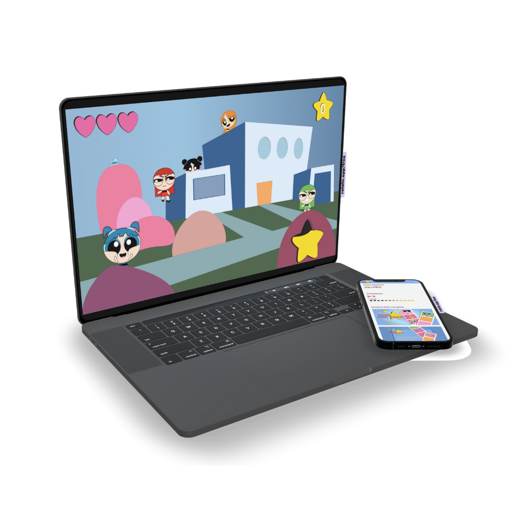
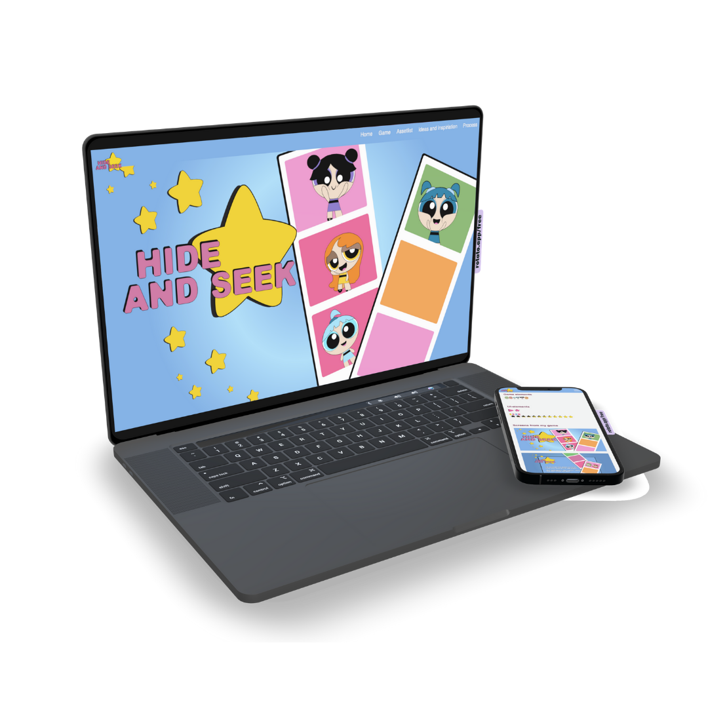

TEMA 4
ANIMASJON
Konseptet
"Hide and seek" er et klikk-spill, som er basert på konseptet til arkade-spillet fra 1975 - whac-a-mole. Spillkarakterene, som har tatt stor inspirasjon fra de originale Powerpuffjentene, leker gjemsel ute i hagen, og din oppgave er å klikke på de før de forsvinner og dukker opp et nytt sted igjen.
Hva har jeg lært i dette forløpet?
Temaet 04_animation gikk kort forklart it på at jeg skulle lage mitt eget spill. Alt av grafikk, UI-elementer, bakgrunner og karakterer skulle vi lage i Adobe Illustrator, også skulle jeg senere ferdigstille dette ved hjelp av HTML, CSS og JavaScript. En prosess som skulle gå fra kreative tankeprosesser, håndtegnede ideer og moodboards til et ferdig programmert spill bygget opp av CSS, JavaScript og HTML.
Hele denne prosessen begynte med skissering av min spill-idè, samt en papir prototype. Ideen som jeg utviklet her, valgte jeg å ikke gå videre med da jeg ikke var fornøyd. Spillet skulle ta utgangspunkt i de kreative kjennetegnene og hovedtrekkene til noe som allerede eksisterte. Etter jeg hadde gjort grundigere unersøkelser og idèutvikling, i tillegg til videreutvikling av moodboard endte jeg opp med å bli inspirert av Powerpuffjentene. Jeg tegnet de første skissene av mine spill-karakterer på min iPad. Deretter la jeg de over i Adobe Illustrator, hvor jeg brukte pen-tool og shapes for å rentegne de. Jeg endte med å videreutvikle skissene mine ved å prøve meg frem inne i Illustrator. I det samme programmet lagde jeg mine spillskjærmer med bakgrunn, mellomgrunn og forgrunn. Det samme gjaldt for alle mine UI-elementer og sluttskjærmer.
For å ha et best mulig utgangspunkt før jeg skulle begynne å kode spillet mitt lagde jeg aktivitets- og statemachinediagrammer. Tanken bak slike diagrammer er at det skal være lettere å holde kontroll over sin JavaScriptog hva som skal skje når. I og med dette var et prosjekt hvor jeg var den eneste utvikleren synes jeg ofte det var overskuelig nok, og hadde ikke ofte behov for å gå tilbake til diagrammene mine. Men slike diagrammer egner seg spesielt godt dersom man skal kode i større team, slik at lle parter er klar over hva som skal kodes, og hva som skal skje på hvilket tidspunkt.
Koden bak spillet bygger hovedsakelig på JavaScript med eventListeners som gjorde elemenene klikk-bare og som setter i gang spillets funksjoner. Deretter er det også JavaScripten som setter i gang de uliek CSS animajsonene som gir liv til spillet, og som gjør at elementene beveger seg. JavaSpript er også tatt i bruk for å legge til bakgrunnsmusikken som jeg har tatt fra Adobe Stock Music.
Refleksjoner
En del av oppgaven var også å spille inn egne lydeffekter, for å senere behandle de i Adobe Audition for å blant annet reduere støy. Dette var en del av oppgaven som jeg ikke fikk tid til, da jeg heller valgte å foksere på å ferdigstille produktet.
Adobe Illustrator var for meg et helt nytt program, og jeg brukte mye tid på å knote med dette. Jeg er nå i etterkant ganske fornøyd med grafikken, men dersom jeg skulle lagd det på nytt ville jeg helt klart satt et større personlig preg, og ikke tatt like stor direkte inspirasjon fra Powerpuff.
Når det kommer til dokumentasjonssiden med assetlist, den kreative prosessen og diagrammer - så er denne ikke helt fullført. Her skulle jeg gjerne hatt mer tid til å fylle inn all informasjon.